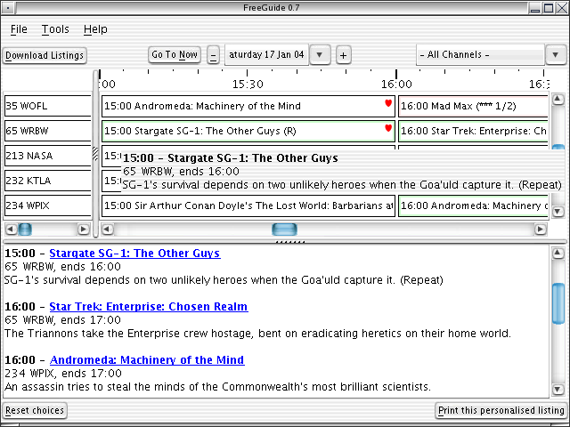
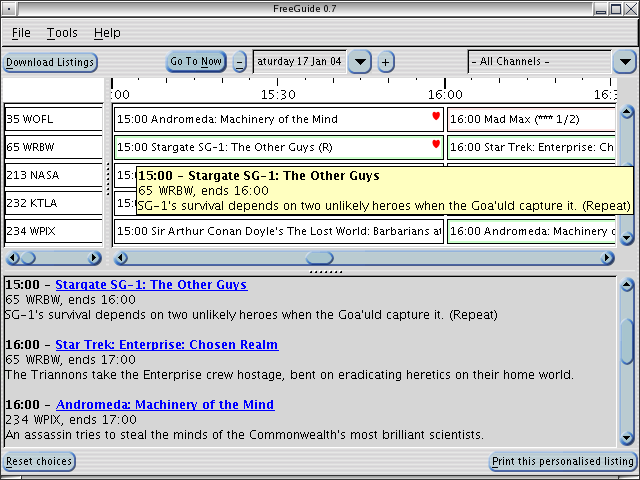
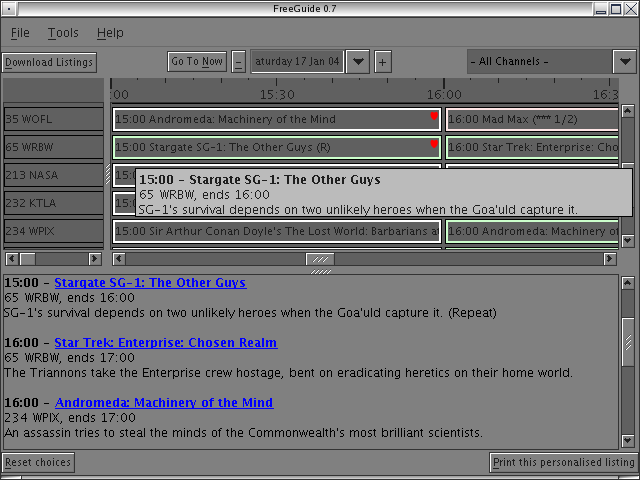
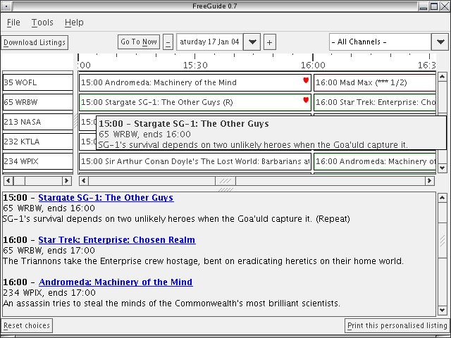
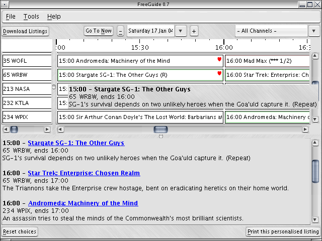
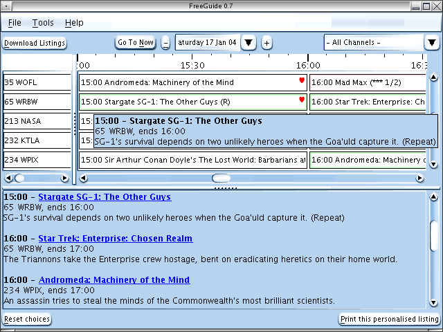
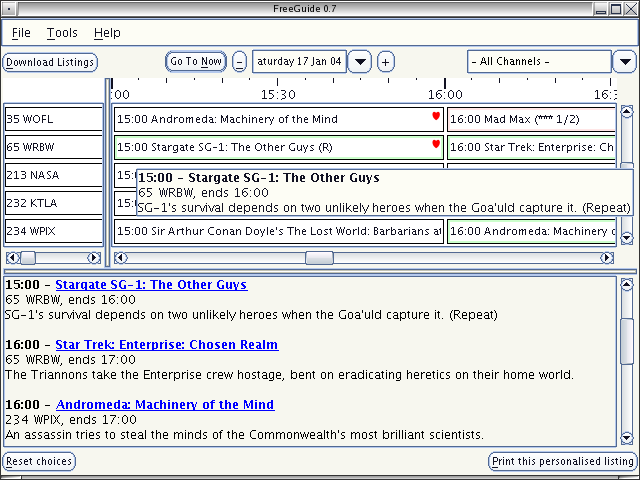
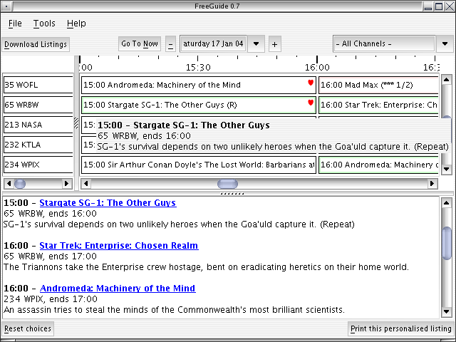
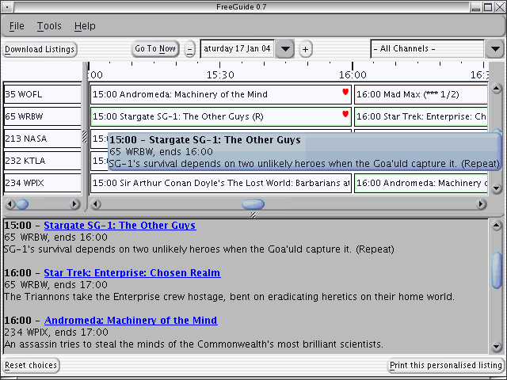
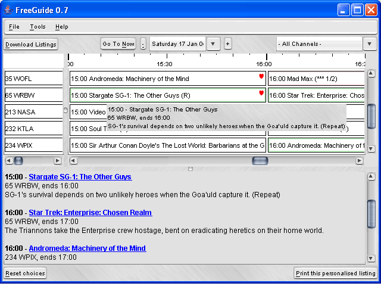

Home | README | FAQ | User Guide | Look and Feel Guide | Timezones | Developers | Design Document | Linux XMLTV Install | Contributors
Back to Screen Shots
FreeGuide Screen Shots - GTK+ L&F
Contents
Click an image to go to the theme's web page.
AquaLightBlue theme

BlueBubble theme

Darkcurve theme

Etriacurve theme


M8 Blue theme

Variance theme

XLiquid GTK theme

gnububble theme

